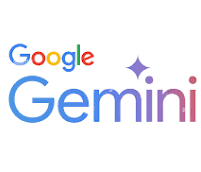
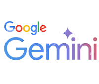
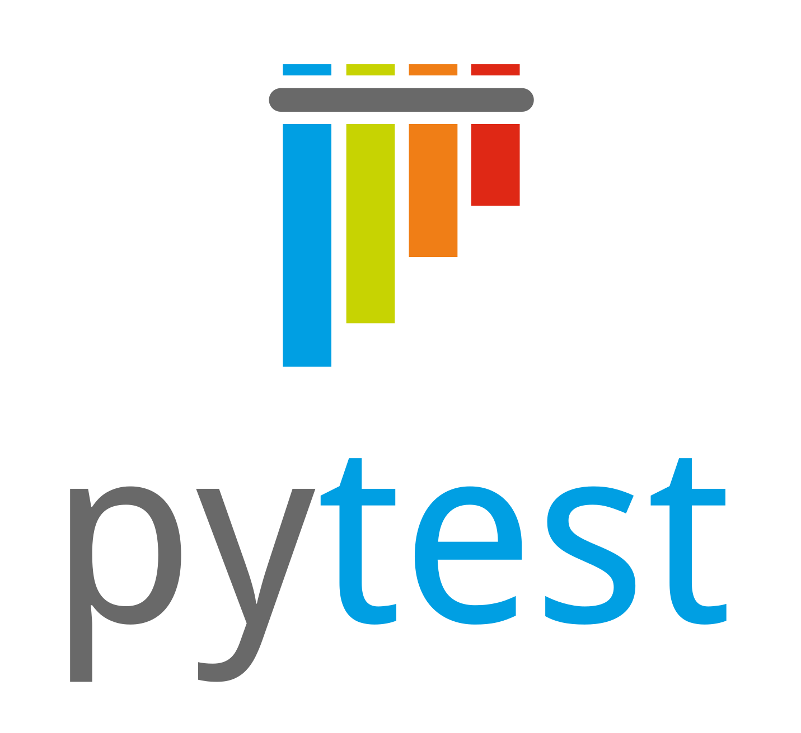
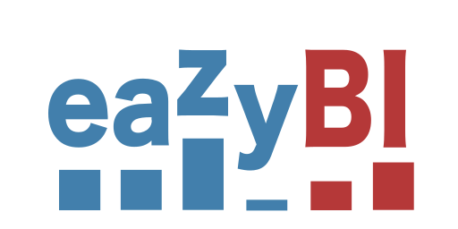
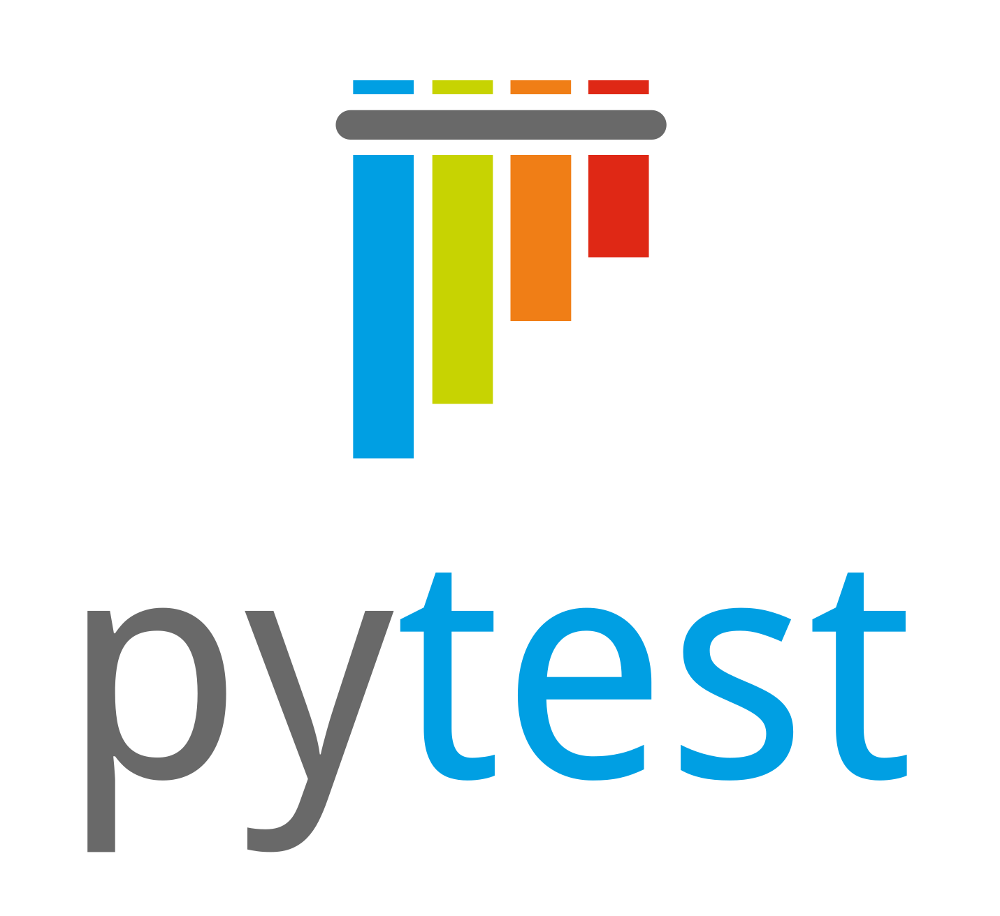
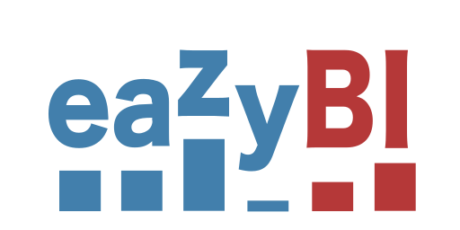

As an Engineering Leader, I have a proven track record driving large-scale software quality, automation, and infrastructure programs across distributed edge, cloud, AI, and wireless domains.
I specialize in architecting end-to-end quality strategies, automation frameworks, and CI/CD workflows that accelerate time-to-market, enhance coverage, and ensure reliability at scale. With expertise in business analytics and AI-driven automation, I lead data-driven initiatives that align engineering efforts with strategic business goals.
I’m passionate about building high-performance teams and fostering a culture of continuous growth and innovation. While deeply engaged in technical execution, I empower engineers to take ownership of their work, offering mentorship and support when needed. My collaborative leadership style strengthens cross-functional partnerships, optimizes engineering efficiency, and drives scalable, high-quality product delivery from concept to deployment, delivering measurable business impact at every stage.
 


 


